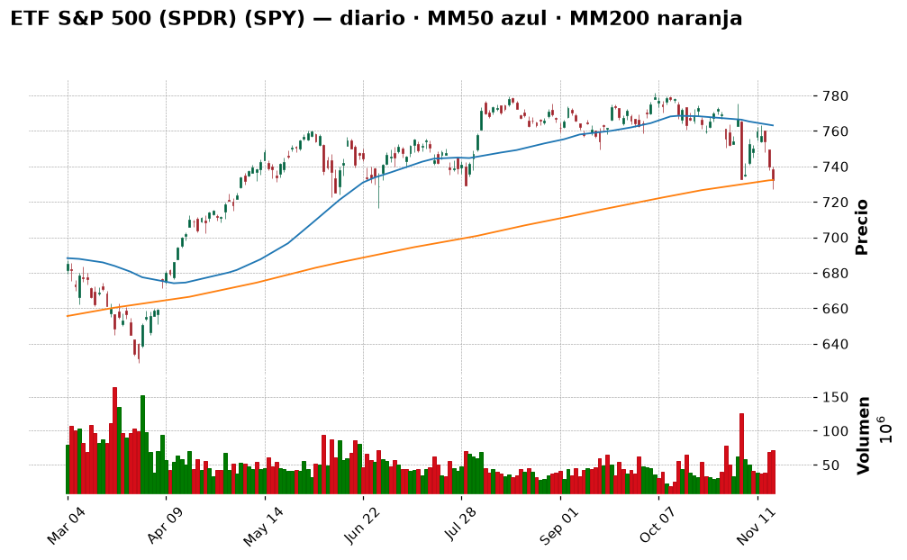
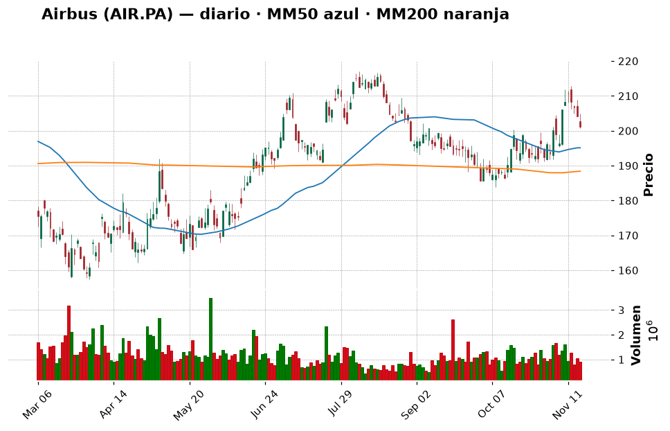
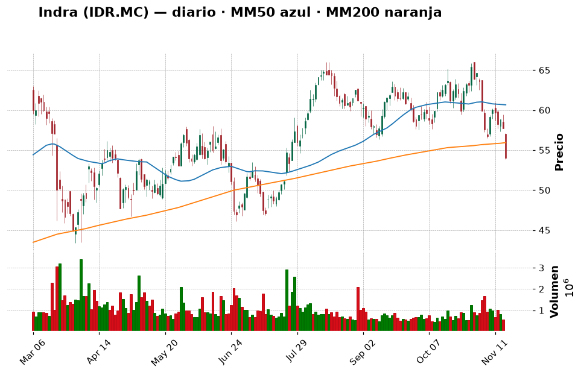
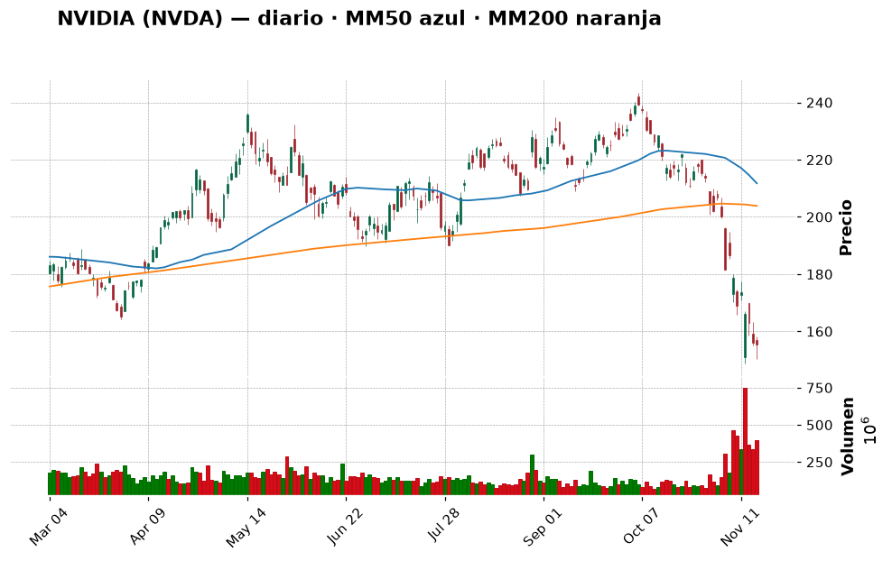
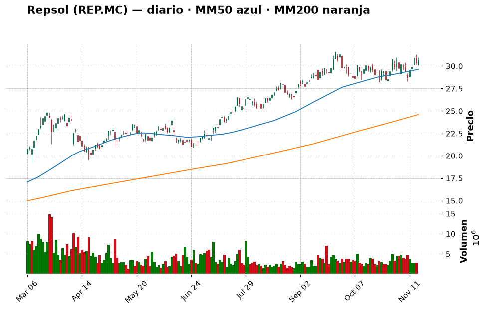
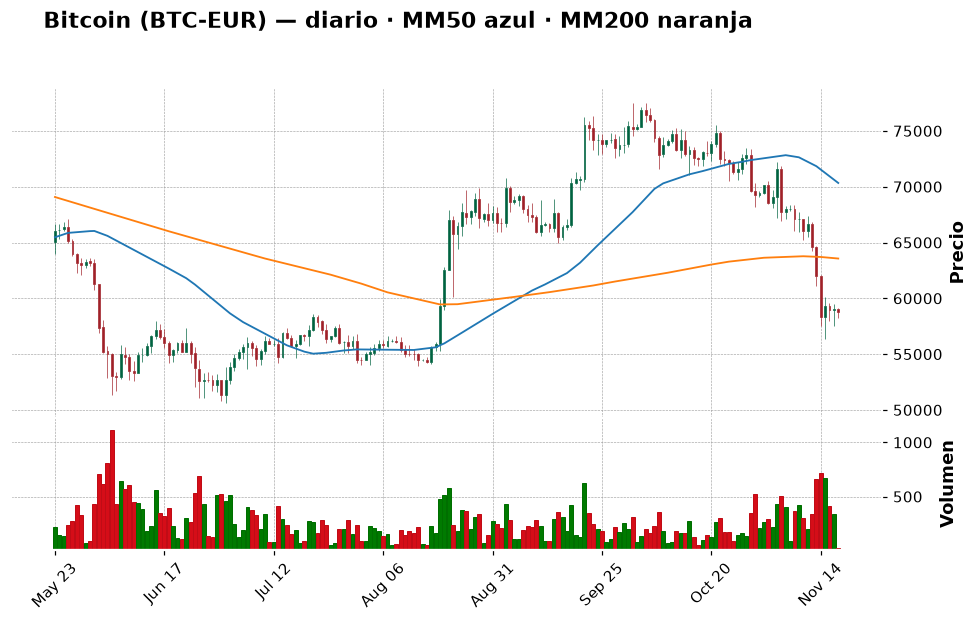
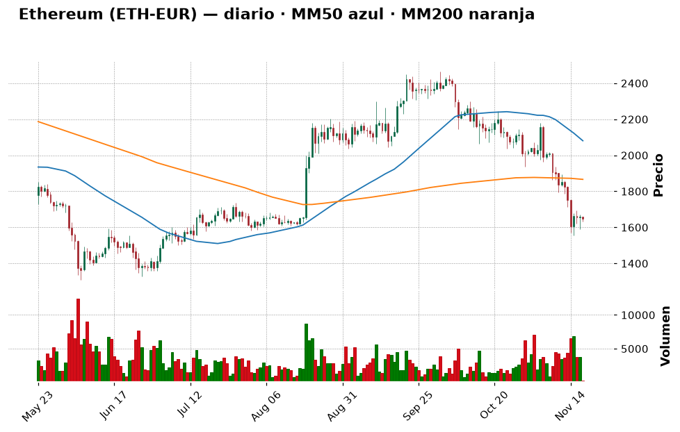
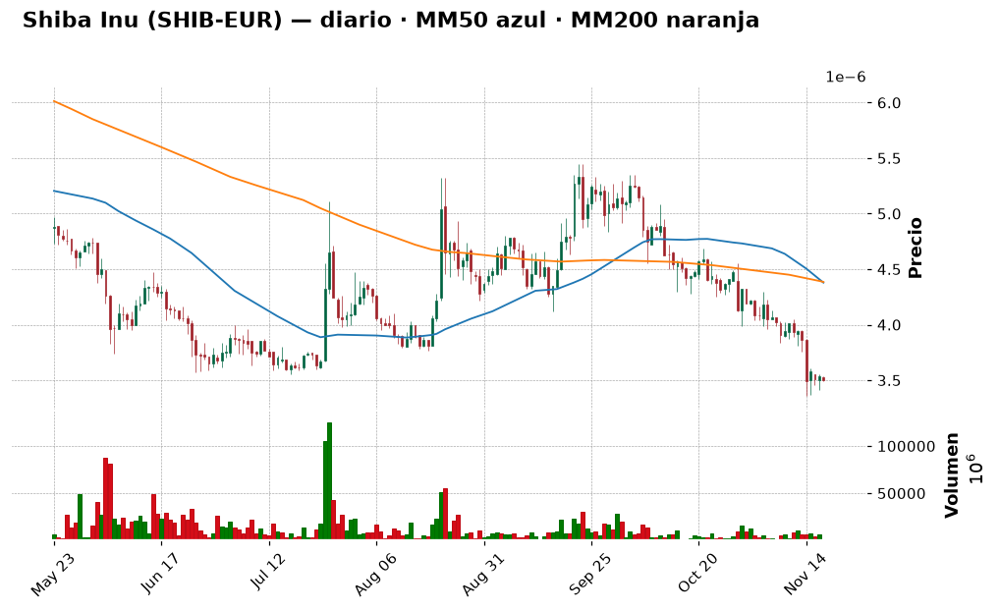

📈 Informe pre-apertura — miércoles 18 de noviembre de 2026
Generado automáticamente a las 08:20 (hora de Madrid) · Bolsa española abre a las 9:00 · Wall Street a las 15:30 · Cripto: 24/7
Termómetro del día: 🔴 mucha incertidumbre — Nvidia ha presentado unos resultados excelentes, pero el mercado sigue nervioso: ayer Europa vivió su peor día desde marzo (Euro Stoxx 50 −2,15 %), el VIX sube a 25,5, la SEC investiga a Nvidia según el WSJ y hoy llegan las actas de la Fed (20:00 h) y el precio de salida de Anthropic a bolsa. La parte buena para ti: dos de los niveles que fijamos de antemano (ETF y Airbus) se han alcanzado.
Lección de hoy: Resultados trimestrales y previsiones (guidance)
1. Lo que tienes que saber hoy
- Nvidia aprueba… y la bolsa se encoge de hombros. Ingresó 115.800 millones de dólares en el trimestre (+103 % en un año), muy por encima de los ~108.000 millones que ella misma preveía, y espera 130.000 millones (±3 %) para el siguiente, frente a los 125.250 millones que esperaban los analistas (LSEG, vía investingLive y BigGo Finance). La acción llegó a subir un ~4–5 % tras el cierre, pero el entusiasmo se desinfló: según Reuters (vía Investing.com) acabó con un −0,3/−0,5 % en el mercado fuera de hora, y otras fuentes la sitúan con un +2 %. Pesan dos cosas: el consejo descarta la vuelta de Jensen Huang y busca un CEO con una empresa de selección, y el WSJ informa de que la SEC investiga la exactitud de la información que Nvidia daba a los inversores (Decrypt, Reuters). Es el ejemplo perfecto de la lección de hoy: unos buenos números no garantizan que la acción suba.
- El ETF del S&P 500 llega a la parte baja de la zona de compra. Ayer el SPY cayó otro −1,01 %, tocó un mínimo de 727,00 $ y cerró en 732,44 $, prácticamente encima de su media de 200 sesiones (732,34 $). Nuestra regla decía: la segunda mitad del tramo 2 "el 1-dic o antes si el SPY baja a 729–732 $". Se ha cumplido. Recomiendo comprar ~300 € hoy (ver sección 6: no veo en tu
cartera.csvla compra de ayer, así que te explico qué hacer en cada caso). - Airbus toca nuestro nivel de compra. Bajó hasta 200,70 € y cerró en 201,10 € (−1,5 %). Llevamos cuatro informes diciendo "primer tramo si toca ~202 €". Toca comprar el primer tramo (~150–200 €), no más.
- Indra se desploma un −6,41 % (54 €) tras informaciones sobre una investigación de la Fiscalía Anticorrupción por posibles irregularidades en contratos y préstamos públicos de Defensa (Europa Press; Escudo Digital). Pierde además el soporte de 56,36 € que vigilábamos. Pasa de Esperar a Evitar.
- Bitcoin, sin cambios: 58.798 € (−7,5 % bajo su MM200), miedo y codicia en 11/100. El tramo de diciembre sigue en pausa.
2. ✅ Recomendaciones del día (resumen)
| Activo | Acción | vs. ayer | Cuánto (orientativo) | Horizonte | Por qué, en una frase | Confianza |
|---|---|---|---|---|---|---|
| ETF S&P 500 (SPY / SPY5.L) | Comprar más | = | ~300 € hoy (≈3 % del patrimonio), una sola compra; nunca 600 € de golpe | Años (5+) | El SPY tocó 727 $ y cierra sobre su MM200: se cumple la regla de adelantar la 2.ª mitad del tramo 2 | media |
| Airbus (AIR.PA) | Comprar | ↑ antes Esperar | Tramo 1: ~150–200 € (≈2 %); el tramo 2 solo con un cierre sobre 217 € o en ~193 € | Años | Ha tocado el nivel de ~202 € fijado de antemano; tendencia de fondo alcista intacta (+6,8 % sobre MM200) | media |
| Indra (IDR.MC) | Evitar | ↓ antes Esperar | 0 € | — | Investigación de Anticorrupción y ruptura del soporte de 56,36 € | media |
| NVIDIA (NVDA) | Evitar | = | 0 € | — | Grandes cifras, pero sin CEO permanente, con posible investigación de la SEC y −23,7 % bajo su MM200 | media |
| Repsol (REP.MC) | Mantener | = | No añadir | Años | Tendencia alcista (+24,7 % sobre MM200), a un −3 % de máximos | media |
| Solaria (SLR.MC) | Mantener | = | No añadir | Años | Rebote del +1,2 % sin cambiar la tendencia bajista; posición mínima | baja |
| Telefónica (TEF.MC) | Esperar | = | 0 € hoy; hasta ~250 € si supera 3,71 € | Años | 3,48 €, sigue bajo su MM200 (3,65 €) | baja |
| Iberdrola (IBE.MC) | Esperar | = | Hasta 5 % (~480 €) si retrocede a 21–22 € | Años | 22,88 €: se acerca, pero aún no está en el nivel | media |
| Inditex (ITX.MC) | Mantener | = | No añadir | Años | A un −2 % de su máximo anual; tu posición gana +121 % | media |
| Apple (AAPL) | Mantener | = | No añadir | Años | Aguanta (−0,25 %) pese a la caída de sus sistemas el martes | media |
| Bitcoin (BTC) | Mantener | = | No vender; tramo del 1-dic en pausa; ~50 € solo si llega a ~54.000 € | Años | Sigue un −7,5 % bajo su MM200 | media |
| Ether (ETH) | Esperar | = | 0 € hoy | Años | Ayer tocó 1.590 € y cerró en 1.658 €: el soporte de 1.580 € aguanta | media |
| Shiba Inu (SHIB) | Evitar | = | No añadir | — | Memecoin, −54 % en un año | alta |
(El resto de la watchlist —Santander, BBVA, Oryzon, IAG, Aena, Microsoft, Amazon, Alphabet, Berkshire, los ETF del Nasdaq y del MSCI World, ASML, LVMH, SAP y Siemens— tiene su veredicto en la tabla "Resto de la watchlist" de la sección 6.)
🔁 Seguimiento de ayer (informe del martes 17-nov):
- ETF S&P 500: "Comprar más ~300 € hoy; la otra mitad el 1-dic o si el SPY cae a 729–732 $" → el SPY bajó a 727,00 $ y cerró en 732,44 $. La condición de la segunda mitad se ha cumplido. La invalidación (cierre semanal bajo 729 $) no se ha producido: la semana cierra el viernes. Acción sin cambios: Comprar más.
- Airbus: "Esperar; primer tramo si toca ~202 €" → mínimo de 200,70 €, cierre en 201,10 €. Cambio de Esperar a Comprar porque se ha dado exactamente lo que dijimos que nos haría comprar. Cerró un poco por debajo del soporte de 201,65 €, pero muy lejos de los 198 € que, según dijimos ayer, indicarían una ruptura clara.
- Indra: "Esperar; si pierde 56,36 €, esperar más" → lo perdió con fuerza (54,00 €, −6,41 %) y apareció una noticia nueva (investigación de Anticorrupción). Por eso bajo de Esperar a Evitar: ya no es solo un nivel técnico, es una duda sobre el negocio.
- Nvidia: "Evitar; revisaré la idea con los resultados en la mano" → los resultados son muy buenos, pero lo que nos haría cambiar de opinión (CEO permanente y precio sobre su MM200, ~204 $) no se ha dado: el consejo acaba de empezar la búsqueda y la acción está en 155,46 $. Se mantiene Evitar.
- Bitcoin / Ether: ni recupera la MM200 (~63.600 €) ni llega a ~54.000 €; ether toca 1.590 € y aguanta sobre 1.580 €. Sin cambios.
- Tu cartera.csv: no aparece la compra del ETF de ayer (el último movimiento sigue siendo del 11-nov). Si la hiciste, apúntala hoy (ver sección 8); si no la hiciste, no pasa nada: la compra de hoy la sustituye.
Hoy toca ejecutar, no improvisar: ~300 € en el ETF y ~150–200 € en Airbus, ambas con orden limitada, y nada más. Las dos compras salen de niveles que escribimos con calma hace días; lo que no haremos es "aprovechar" la caída de Indra ni perseguir a Nvidia tras sus resultados.
3. Agenda del día
| Hora (Madrid) | Evento | Por qué importa |
|---|---|---|
| Madrugada | Asia, sin rumbo tras Nvidia: Nikkei −0,3 %, Asia-Pacífico sin Japón −0,1 % (quinto día de caídas) (Reuters vía Investing.com) · Irán ataca Kuwait y Baréin con misiles y drones, y sigue atacando petroleros en Ormuz (Reuters vía Investing.com) | Tensión geopolítica, aunque el petróleo baja |
| 8:00 (hora habitual) | IPC del Reino Unido de octubre (Reuters) | Termómetro de la inflación europea |
| 9:00 | Apertura de la Bolsa española. Futuros del DAX y del FTSE −0,3 % (Reuters vía Investing.com) | El Ibex parte de 19.625,3 puntos |
| 11:00 (hora habitual) | Inflación final de la zona euro (IPCA) de octubre (Reuters) · Subasta de bonos alemanes a 7 años | Si la inflación europea no cede, el BCE no bajará tipos |
| Antes de Wall Street | Resultados de Target, Lowe's y TJX (Reuters vía Investing.com) | El consumo estadounidense, examinado por las tiendas |
| 15:30 | Apertura de Wall Street. Futuros del S&P 500 +0,24 % (7.376,75) y del Nasdaq 100 +0,59 % (27.234,75) (Yahoo Finance, 7:38 h de Madrid) | Rebote tímido tras cuatro días de caídas |
| 20:00 (hora habitual) | Actas de la Fed de su última reunión (Reuters) | Cuántos miembros quieren subir tipos y cuánto. Investing.com las titula "¿25 o 50 pb en diciembre?" |
| Durante el día | Discursos de Barr, Williams y Kashkari (Fed). Williams ya dijo ayer que "probablemente harán falta más subidas" (Reuters vía Investing.com) | El tono de la Fed mueve bonos, dólar y bolsa |
| Tras el cierre | Resultados de Palo Alto Networks · Anthropic fija el precio de su OPV (podría valorarse en hasta 1,4 billones $; Bloomberg vía Reuters) | Una OPV gigante que puede "absorber" dinero de otras tecnológicas |
| Jue 19 | Debut de Anthropic en el Nasdaq · Resultados de Walmart · Cumbre APEC | Ojo a los productos apalancados sobre Anthropic: nunca para tu perfil |
| Dom 29-nov | Elecciones generales en España | El mercado "se ha vacunado" del riesgo político (Cinco Días, ayer) |
| 1-dic | Tu aportación de 200 € | Tramo 3 del ETF (si hoy completas el tramo 2) |
| 9-dic / 17-dic | Reuniones de la Fed y del BCE | La Fed, con una subida casi descontada |
Nota: las búsquedas web del calendario económico, la previsión de apertura del Ibex, los resultados del día y las noticias cripto del día no devolvieron páginas fiables fechadas hoy (casi todas eran del 18-nov-2025). La agenda sale de Reuters (vía Investing.com). Las horas marcadas como "habitual" son las de costumbre para ese dato, no confirmadas hoy por nuestras fuentes.
4. Cómo llegan los mercados
España y Europa
El martes 17: el Ibex 35 cayó un −1,61 % hasta 19.625,3 puntos (Europa Press), su peor sesión en semanas, y se aleja de los 20.000. La peor fue Indra (−6,41 %, 54 €), por las informaciones sobre una investigación de posibles irregularidades en contratos de Defensa (Europa Press). También cayeron con fuerza Aena (−2,67 %), Santander (−2,03 %) e IAG (−1,80 %) (precios del JSON). Solo unos pocos aguantaron en verde: Solaria (+1,21 %) y Repsol (+0,89 %). Expansión destacó la caída de Mapfre tras una doble rebaja de Barclays. El Euro Stoxx 50 se desplomó un −2,15 % (6.212,11): según Reuters, Europa vivió su peor día desde marzo, con ASML (−5,34 %) y SAP (−5,58 %) arrastradas por la "venta de la IA" y la caída del software (Salesforce perdió un −9,5 % en EE. UU.).
Noticias de empresas y de España:
- Indra, Airbus, GMV y EM&E captan 6.400 millones en créditos estatales al 0 % para prefinanciar programas de Defensa (helicópteros, modernización) (Expansión). Ojo: según Escudo Digital, Anticorrupción investiga precisamente contratos y préstamos públicos de más de 6.000 millones vinculados al rearme, adjudicados sobre todo a Indra y a EM&E. Para Airbus el efecto es pequeño (es una empresa europea enorme y estos préstamos son una parte mínima de su negocio); para Indra, en cambio, es central.
- Santander lidera en Europa la venta de riesgo de crédito (unos 82.000 millones en "transferencias de riesgo sintético") que la banca usa para poder pagar más dividendo y recomprar acciones; S&P advierte de que los bancos más dependientes de ellas podrían necesitar más capital (Cinco Días). Además, avisa de más costes regulatorios en EE. UU. por su filial Webster (Expansión). 💡 Transferir riesgo sintético es, simplificando, "pagar un seguro" a inversores para que asuman parte de las pérdidas de unos préstamos si salen mal; así el banco necesita guardar menos capital.
- Deutsche Bank cae en bolsa por una filtración de millones de documentos (Cinco Días).
- Las aerolíneas (IAG, Air France-KLM, Lufthansa, Ryanair) recortan vuelos y buscan clientes prémium ante un queroseno disparado, con una factura extra de 10.000 millones solo este año (Expansión). Ryanair invertirá 500 millones en Sevilla.
- Bruselas mejora al 2,6 % el crecimiento previsto para España este año, pero eleva la inflación al 3,9 % (Europa Press). El Euríbor sigue subiendo: media de noviembre en el 3,279 % (Expansión). 💡 El Euríbor es el tipo de interés al que se prestan los bancos europeos entre sí; de él dependen la mayoría de las hipotecas variables en España.
- El español Pablo Hernández de Cos se perfila como próximo presidente del BCE, con el apoyo de Francia y Alemania (Expansión).
- Amancio Ortega compra una torre de lujo en Chicago por 180 millones (Europa Press); PLD Space ficha a Mitsubishi como primer cliente de su cohete Miura 5 (Expansión).
Estados Unidos
El martes 17: cuarto día seguido de caídas. S&P 500 −1,03 % (7.340,53), Nasdaq −0,74 % (24.328,38) y Dow Jones −1,64 % (50.759,42). Los 11 sectores del S&P 500 cayeron; el financiero, un −1,9 %. El sector tecnológico ya pierde ~20 % desde el 6 de octubre (Reuters vía Investing.com). El VIX sube a 25,46 (+11 %). Pesaron unas ventas minoristas sólidas y el tono duro de la Fed (más subidas de tipos), Salesforce (−9,5 %) y una cadena de caídas de sistemas (Apple y la Agencia de Seguridad Nacional el martes, JPMorgan el lunes, Microsoft la semana pasada) (Expansión; Yahoo Finance). Microsoft marca mínimos de siete semanas (506,24 $).
Nvidia, en detalle: ingresos de 115.800 millones $ (+103 %), beneficio por acción ajustado de 2,68 $ y beneficio neto de 65.287 millones $ (+105 %) (investingLive, Europa Press). Previsión de 130.000 millones para el próximo trimestre y crecimiento esperado del 75 % para 2028 (antes, 70 %). Le quedan 227.000 millones autorizados para recomprar acciones. La consejera delegada interina, Colette Kress, defendió un enfoque "disciplinado" para financiar a clientes como CoreWeave (MarketWatch). En contra: Huang dice que "sería un honor volver", pero el consejo lo descarta y crea nuevos comités de control de exportaciones (Expansión, Decrypt); el WSJ informa de una investigación de la SEC; el fondo Muddy Waters dice haber apostado contra la acción, y un informe de The Information vincula a comerciales de Nvidia con el caso de espionaje de Alibaba (Reuters vía Investing.com). Morgan Stanley rebaja su precio objetivo (Investing.com).
Esta mañana: futuros del S&P 500 +0,24 % y del Nasdaq 100 +0,59 % (Yahoo Finance, 7:38 h de Madrid). Un rebote modesto, nada que ver con el ~8 % que descontaban las opciones para Nvidia.
Macro (tipos de interés, inflación, divisas, materias primas)
- Fed: Musalem (St. Louis) cree que harán falta "varias" subidas antes de la primavera de 2027, y Williams (Nueva York) que "probablemente" hagan falta más, aunque "no es momento de una acción drástica" (Reuters vía Investing.com). El mercado descuenta unas tres subidas de 0,25 puntos hasta mediados de 2027. Bank of America no descarta una subida de medio punto en diciembre (MarketWatch). El bono a 10 años paga un ~5,08–5,10 %.
- Divisas: el índice del dólar sigue cerca de su máximo en 19 meses (103,6); el euro/dólar está en 1,0983 (−0,18 %) esta mañana (Yahoo Finance). El yen, en 159,4 por dólar, al borde de la zona de posible intervención. Para ti: tus 2.605,43 USDC valen 2.372,50 € (+5,99 € frente a ayer, por la subida del dólar).
- Petróleo Brent: 92,12 $ (−1,10 %) (Yahoo Finance), a pesar de los ataques de Irán contra Kuwait y Baréin. El mercado parece más preocupado por una economía más lenta (Druckenmiller dice estar apostando contra el cobre y avisa de debilidad en 2027, CoinDesk) que por el suministro.
- Oro: ~3.782 $ (−2,1 %), plata −2,9 % y cobre −2,8 % (Reuters vía Investing.com): con tipos altos y dólar fuerte, las materias primas sufren.
5. Panorama técnico de la watchlist
💡 Cómo leer esta tabla: la tendencia resume si el precio lleva meses subiendo, bajando o de lado
(comparando el precio con sus medias de 50 y 200 días). El RSI mide de 0 a 100 si las subidas o bajadas
recientes han sido muy fuertes: por encima de 70 se dice "sobrecompra" (quizá ha subido demasiado rápido),
por debajo de 30 "sobreventa". Son pistas, no predicciones.
Todos los datos son del cierre del martes 17-nov (ningún valor llega con retraso hoy ✅).
| Valor | Último cierre | Día | 1 mes | 1 año | Tendencia | RSI | vs MM200 |
|---|---|---|---|---|---|---|---|
| IBEX 35 (^IBEX) | 19.625,3 | −1,61 % | +3,08 % | +22,74 % | ➡️ lateral | 53,4 🟡 | +4,5 % |
| Euro Stoxx 50 (^STOXX50E) | 6.212,11 | −2,15 % | +1,10 % | +8,17 % | ➡️ lateral | 47,2 🟡 | +1,4 % |
| S&P 500 (^GSPC) | 7.340,53 | −1,03 % | −4,55 % | +9,01 % | ➡️ lateral | 37,2 🟡 | −0,1 % |
| Nasdaq Composite (^IXIC) | 24.328,38 | −0,74 % | −7,95 % | +6,23 % | ➡️ lateral | 35,7 🟡 | −3,3 % |
| Banco Santander (SAN.MC) | 10,80 € | −2,03 % | −8,27 % | +21,03 % | ➡️ lateral | 41,4 🟡 | −4,4 % |
| BBVA (BBVA.MC) | 23,14 € | −1,66 % | +1,80 % | +28,84 % | ➡️ lateral | 50,5 🟡 | +7,2 % |
| Inditex (ITX.MC) | 59,56 € | −1,23 % | +7,47 % | +25,44 % | 📈 alcista | 60,4 🟡 | +8,9 % |
| Iberdrola (IBE.MC) | 22,88 € | −1,12 % | +7,77 % | +26,90 % | 📈 alcista | 60,4 🟡 | +11,8 % |
| Telefónica (TEF.MC) | 3,48 € | −0,60 % | +3,02 % | −3,90 % | ➡️ lateral | 55,0 🟡 | −4,8 % |
| Repsol (REP.MC) | 30,68 € | +0,89 % | +3,61 % | +87,76 % | 📈 alcista | 56,5 🟡 | +24,7 % |
| Solaria (SLR.MC) | 15,08 € | +1,21 % | −0,53 % | −14,71 % | 📉 bajista | 44,4 🟡 | −22,8 % |
| Oryzon (ORY.MC) | 2,32 € | −0,86 % | −8,24 % | −23,56 % | 📉 bajista | 37,5 🟡 | −18,5 % |
| IAG (IAG.MC) | 5,34 € | −1,80 % | +9,33 % | +22,97 % | 📈 alcista | 59,0 🟡 | +9,5 % |
| Indra (IDR.MC) | 54,00 € | −6,41 % | −11,71 % | +14,07 % | ➡️ lateral | 34,0 🟡 | −3,5 % |
| Aena (AENA.MC) | 28,40 € | −2,67 % | +11,20 % | +25,39 % | 📈 alcista | 61,0 🟡 | +9,2 % |
| Apple (AAPL) | 351,91 $ | −0,25 % | +2,62 % | +29,18 % | 📈 alcista | 56,1 🟡 | +16,5 % |
| Microsoft (MSFT) | 506,24 $ | −2,27 % | −5,11 % | −0,77 % | ➡️ lateral | 41,9 🟡 | +14,5 % |
| NVIDIA (NVDA) | 155,46 $ | −0,44 % | −28,39 % | −18,25 % | ➡️ lateral | 22,5 🟢 | −23,7 % |
| Amazon (AMZN) | 257,89 $ | +0,05 % | −1,74 % | +9,89 % | 📈 alcista | 49,7 🟡 | +5,4 % |
| ETF S&P 500 (SPY) | 732,44 $ | −1,01 % | −4,44 % | +9,01 % | ➡️ lateral | 37,5 🟡 | +0,0 % |
| ETF Nasdaq 100 (QQQ) | 656,95 $ | −0,73 % | −8,55 % | +7,90 % | ➡️ lateral | 36,5 🟡 | −3,8 % |
| Alphabet (GOOGL) | 280,20 $ | −1,24 % | −18,59 % | +1,37 % | 📉 bajista | 32,9 🟡 | −17,1 % |
| Berkshire Hathaway (BRK-B) | 586,76 $ | −1,03 % | +10,25 % | +15,29 % | 📈 alcista | 73,1 🔴 | +17,0 % |
| ETF MSCI World (IWDA.AS) | 127,19 € | −2,15 % | −2,66 % | +17,14 % | ➡️ lateral | 40,3 🟡 | +3,9 % |
| Airbus (AIR.PA) | 201,10 € | −1,49 % | +3,48 % | −1,61 % | 📈 alcista | 52,5 🟡 | +6,8 % |
| ASML (ASML.AS) | 1.236,80 € | −5,34 % | −17,33 % | +39,00 % | ➡️ lateral | 33,7 🟡 | −11,7 % |
| LVMH (MC.PA) | 393,00 € | −2,72 % | +0,77 % | −36,57 % | 📉 bajista | 44,8 🟡 | −14,6 % |
| SAP (SAP.DE) | 201,50 € | −5,58 % | +0,83 % | −1,87 % | 📈 alcista | 43,8 🟡 | +20,7 % |
| Siemens (SIE.DE) | 269,80 € | −1,01 % | +1,35 % | +23,68 % | ➡️ lateral | 48,6 🟡 | +3,6 % |
(🟢 = sobreventa, RSI < 30 · 🟡 = zona neutral · 🔴 = sobrecompra, RSI > 70.)
Lectura de conjunto: la caída se ha extendido: ayer ya no era solo la tecnología, también Europa (Euro Stoxx 50 −2,15 %), la banca y casi todos los sectores. Lo más importante para ti: el S&P 500 está justo sobre su MM200 (el SPY a un +0,01 %, el índice a un −0,1 %). Es la "línea de la tendencia de fondo" que explicamos el 13-nov, y el mercado la está poniendo a prueba. El Nasdaq sigue por debajo (−3,3 %). En España, el Ibex aguanta todavía un +4,5 % sobre su MM200 y valores como Repsol, Iberdrola o Inditex mantienen su tendencia alcista: no todo cae a la vez.
6. Ideas de bolsa: qué haría un experto
ETF S&P 500 (SPY5.L / SPY)Comprar más(~300 € hoy)

- Qué es: un fondo que compra de una vez las ~500 mayores empresas de EE. UU. Tú tienes la versión europea (UCITS) que cotiza en Londres, SPY5.L; el gráfico es del SPY estadounidense, que sigue el mismo índice.
- Por qué es noticia hoy: cuarto día seguido de caídas del S&P 500 (−1,03 % ayer) por la "venta de la IA", las ventas minoristas sólidas y el tono duro de la Fed (Reuters). Nvidia (~6–7 % del índice) presentó buenos resultados, pero no ha servido de detonante de un rebote fuerte.
- Lo que dice el gráfico: el SPY tocó 727,00 $ y cerró en 732,44 $, prácticamente encima de su MM200 (732,34 $). El soporte de 739,51 $ que vimos ayer se ha perdido; el siguiente está en 729,10 $, después 722,59 $ y 716,58 $. Por arriba, la MM50 (763,15 $) y resistencias en 755,6–756,7 $. RSI 37,5 (neutral, cerca de la sobreventa, pero no en ella), MACD "empeorando" y volumen 1,4 veces el normal: hubo ventas con convicción. A un −6,3 % de su máximo de 52 semanas (781,62 $). En llano: la tendencia de fondo está en el filo. Si aguanta aquí, buena zona de compra; si se rompe, podría bajar otro 2–3 %.
- Lo positivo: compras el índice más diversificado del mundo con un descuento del ~6 % sobre su máximo, justo en la zona que elegimos hace días.
- El riesgo: que el viernes cierre la semana por debajo de 729 $; entonces la MM200 estaría perdida y los siguientes niveles (722–717 $) quedarían a la vista.
- 🧑💼 Recomendación: COMPRAR MÁS. La regla decía "segunda mitad del tramo 2 si el SPY cae a 729–732 $": ha bajado a 727 $. La seguimos. Lo que no haría es comprar más de lo previsto porque "está barato": el plan ya reparte el riesgo.
- Cuánto y cómo: ~300 € hoy, una sola compra, en el SPY5.L (sesión de Londres, de 9:00 a 17:30 h de España), con orden limitada cerca del precio de mercado. Hay dos casos:
- Si ayer compraste los ~300 € (aunque no los hayas apuntado): la de hoy completa el tramo 2. Tu aportación del 1-dic se convertirá en el tramo 3.
- Si ayer no compraste: la de hoy es esa misma media parte; no compres 600 € para "ponerte al día". La otra mitad, el 1-dic con la aportación.
- Horizonte: años (5 o más).
- Qué me haría cambiar de opinión: un cierre semanal (viernes) por debajo de 729 $: no vendería nada, pero pausaría los siguientes tramos hasta ver estabilidad (un cierre semanal de nuevo sobre ~732 $ o un suelo claro en 717–723 $). Es la respuesta a la pregunta de ayer, aplicada.
- Qué mirar para entenderlo: el viernes por la noche, mira el cierre semanal del SPY. Por encima de 729 $: el soporte y la MM200 han aguantado. Por debajo: se ha roto la zona y el plan se pausa.
- Confianza: media
Airbus (AIR.PA)Comprar(primer tramo)

- Qué es: el mayor fabricante de aviones comerciales del mundo (y un actor clave en defensa y espacio en Europa).
- Por qué es noticia hoy: forma parte del grupo (con Indra, GMV y EM&E) que capta 6.400 millones de euros en créditos estatales al 0 % para programas de Defensa en España (Expansión). No hay noticias nuevas sobre entregas en nuestras fuentes: el último dato público son 547 entregas hasta septiembre con un objetivo de ~870 en el año (Demócrata, AirNav Radar). En contra, las aerolíneas recortan vuelos por el queroseno caro (Expansión), aunque el Brent ya ha bajado a 92 $.
- Lo que dice el gráfico: 201,10 € (−1,5 %), tras tocar 200,70 €. Tendencia alcista: sobre su MM50 (195,11 €) y su MM200 (188,39 €, +6,8 %). RSI 52,5 (neutral) y MACD "empeorando" (el impulso a corto plazo se enfría). Cerró ligeramente por debajo del soporte de 201,65 €; los siguientes soportes están en 193,18 € y 190,90 €. Resistencias en 210,95 € y 216,55–217,05 €. A un −9,1 % de su máximo de 52 semanas (221,30 €). Volatilidad anualizada del 31 %. En llano: una corrección dentro de una tendencia sana, en la zona donde dijimos que empezaríamos a comprar.
- Lo positivo: años de pedidos por delante (más de 8.700 aviones en cartera a final de 2025), un duopolio con Boeing y un negocio de defensa que crece con el rearme europeo.
- El riesgo: no cumplir el objetivo de entregas (lo sabremos en enero), una caída general de las bolsas que la arrastre hacia 190 €, y el ruido político alrededor de los préstamos de Defensa.
- 🧑💼 Recomendación: COMPRAR (primer tramo). Es la empresa que más te interesa, con una tendencia de fondo alcista, y ha llegado al precio que fijamos con calma hace días. Por eso compro solo el primer tramo: si sigue bajando hacia 193 €, el segundo tramo saldrá más barato; si rebota, ya tendrás una parte.
- Cuánto y cómo: ~150–200 € hoy (≈1,5–2 % del patrimonio; con ese dinero compras una acción, ~201 €, o una fracción si tu bróker lo permite). Orden limitada a ~201–202 €: si abre más alto y no llega, no pasa nada, se queda pendiente. Segundo tramo (otros ~150–200 €): en la zona de ~193 € o con un cierre por encima de 217 €. Tope total: 3–4 % del patrimonio.
- Horizonte: años.
- Qué me haría cambiar de opinión: un cierre por debajo de 190 € (MM200 y soporte de 190,90 € perdidos) o un recorte del objetivo de entregas. Ahí no compraría el segundo tramo y revisaría la tesis.
- Qué mirar para entenderlo: en las próximas sesiones, fíjate en si el precio rebota desde 200–202 € (el soporte funciona como "suelo") o si cierra por debajo de ~198 € (el suelo cede y el siguiente está en 193 €).
- Confianza: media
Indra (IDR.MC)Evitar(antes Esperar)

- Qué es: la mayor empresa española de defensa y tecnología (radares, sistemas de control aéreo, simuladores, ciberseguridad).
- Por qué es noticia hoy: cayó un −6,41 % (54 €), la peor del Ibex, por las informaciones de una investigación de la Fiscalía sobre posibles irregularidades en contratos de Defensa (Europa Press). Según Escudo Digital, Anticorrupción investiga contratos y préstamos públicos de más de 6.000 millones vinculados al rearme, adjudicados sobre todo a Indra y a EM&E; además, General Dynamics mantiene una batalla legal contra ambas por adjudicaciones directas. No hemos podido leer el artículo completo de Europa Press (la web bloquea el acceso automático); el detalle sale de su titular y de Escudo Digital.
- Lo que dice el gráfico: 54,00 €, con el cierre en el mínimo del día (53,84 €). Pierde el soporte de 56,36 € que vigilábamos y queda por debajo de su MM200 (55,94 €, −3,5 %) y muy lejos de su MM50 (60,65 €). En un mes cae un −11,7 %; en una semana, un −10,1 %. RSI 34,0 (cerca de la sobreventa, sin llegar). Soporte inmediato en 53,18 €; por debajo, un hueco hasta 46,85–46,12 €. Resistencias en 57,98 € y 62,66 €. Volatilidad anualizada del 48 %, muy alta para una gran empresa.
- Lo positivo: el gasto en defensa en Europa seguirá creciendo durante años, y la empresa ha duplicado su cartera de pedidos.
- El riesgo: una investigación judicial puede durar meses o años, y mientras tanto nadie sabe cuánto puede costar (multas, contratos anulados, cambios en la dirección). Ese tipo de incertidumbre es la peor para un principiante.
- 🧑💼 Recomendación: EVITAR. Ayer era "Esperar" por motivos técnicos. Hoy hay un motivo de negocio (la investigación) y uno técnico (soporte y MM200 perdidos). Cuando las dos cosas apuntan en la misma dirección, lo prudente es quedarse fuera. Que haya caído mucho no la hace barata: puede caer más si aparecen detalles.
- Cuánto y cómo: 0 €.
- Horizonte: —
- Qué me haría cambiar de opinión: que se aclare el alcance de la investigación (y que no afecte de lleno a sus contratos) y que el precio recupere su MM200 (~56 €) con un cierre por encima de 57,98 €.
- Qué mirar para entenderlo: compara esta caída con la de Airbus: ambas bajan, pero la de Airbus es "el mercado en general" y la de Indra es "una noticia propia". Saber distinguir las dos es clave para decidir si una caída es una oportunidad o una señal de alarma.
- Confianza: media
NVIDIA (NVDA)Evitar

- Qué es: el gran fabricante de chips para inteligencia artificial.
- Por qué es noticia hoy: ingresos de 115.800 millones $ (+103 %), beneficio por acción de 2,68 $ y previsión de 130.000 millones para el próximo trimestre, por encima de lo esperado (LSEG vía investingLive; BigGo Finance). Pero el consejo descarta la vuelta de Huang y ha contratado una empresa de selección para buscar CEO (Decrypt), el WSJ informa de una investigación de la SEC (Reuters) y Muddy Waters apuesta contra la acción. Jeff Bezos cree que un CEO de fuera tendría una probabilidad "ínfima" de éxito (Yahoo Finance).
- Lo que dice el gráfico: 155,46 $ al cierre (antes de los resultados), un −23,7 % bajo su MM200 (203,87 $) y un −26,6 % bajo su MM50. RSI 22,5 (sobreventa); el MACD pasa a "mejorando" (el impulso bajista se frena). El martes tocó 150,33 $, a un paso de su mínimo de 52 semanas (148,80 $). No hay soportes por debajo en nuestros datos; resistencias muy lejos, en ~214 $. Volumen 1,7 veces el normal.
- Lo positivo: el negocio va mejor que nunca: la demanda de chips para IA sigue "por las nubes".
- El riesgo: el problema de Nvidia ya no son las cifras sino la gobernanza (quién la dirige y qué información dio). Eso no se arregla con un buen trimestre.
- 🧑💼 Recomendación: EVITAR. Dije ayer que revisaría la idea con los resultados en la mano. Lo he hecho: las cifras son excelentes, pero mis dos condiciones (CEO permanente con un plan claro y precio de nuevo sobre su MM200, ~204 $) siguen sin cumplirse. Además, ya la tienes en su justa medida dentro del ETF (~6–7 %): cuando compras el SPY5.L hoy, compras también un poco de Nvidia, diversificada.
- Cuánto y cómo: 0 €.
- Horizonte: —
- Qué me haría cambiar de opinión: nombramiento de un CEO permanente creíble y un cierre sobre ~204 $.
- Qué mirar para entenderlo: cómo cotiza hoy a partir de las 15:30. Si unos resultados tan buenos no consiguen que suba, el mercado está diciendo que su preocupación es otra (ver la lección de hoy).
- Confianza: media
Repsol (REP.MC)Mantener(la tienes)

- Qué es: la mayor petrolera española (exploración, refino, gasolineras y renovables).
- Por qué es noticia hoy: de los pocos valores del Ibex que subió ayer (+0,89 %). Zacks (vía Yahoo Finance) se pregunta si los inversores "infravaloran" Repsol. Sigue vigente la demanda de ~120 millones a las eléctricas por el apagón de 2025 (noticia del lunes).
- Lo que dice el gráfico: 30,68 €, tendencia alcista: +24,7 % sobre su MM200 (24,60 €) y +3,5 % sobre su MM50. RSI 56,5, MACD "mejorando". Sube un +6,9 % en una semana. Sigue por debajo de la resistencia de 31,02–31,64 € (máximo de 52 semanas), a un −3 %. Soportes en 28,31 € y 28,18 €. Volatilidad del 40 %.
- Lo positivo: tu posición gana un +148 % (pagaste 12,37 €) y la tendencia sigue a favor.
- El riesgo: el petróleo baja (Brent 92 $, −1,1 % hoy) incluso con ataques en el Golfo; si la economía se enfría, el crudo podría seguir cayendo.
- 🧑💼 Recomendación: MANTENER. Nada ha cambiado: tendencia intacta y sin noticias negativas. Tampoco ampliaría: ya tienes exposición al petróleo y es un sector muy volátil.
- Cuánto y cómo: no añadir.
- Horizonte: años.
- Qué me haría cambiar de opinión: un cierre por debajo de 28,18 € con el Brent cayendo hacia 80 $: ahí valoraría Reducir.
- Qué mirar para entenderlo: si algún día cierra por encima de 31,64 €, habrá roto su techo del año; mientras tanto, cada vez que se acerque a 31 € es normal que aparezcan vendedores.
- Confianza: media
Resto de la watchlist: veredicto rápido
| Valor | Acción | Por qué (1 frase) | Nivel a vigilar |
|---|---|---|---|
| Solaria (SLR.MC) | Mantener | La tienes (1 acción, +0,6 %): rebota +1,2 % a 15,08 €, pero sigue −22,8 % bajo su MM200; venderla costaría casi lo mismo en comisiones | Resistencia 16,95 €; mínimo anual 13,61 € |
| Telefónica (TEF.MC) | Esperar | 3,48 €, sobre su MM50 (3,43 €) pero −4,8 % bajo su MM200 (3,65 €); sin noticias propias | Comprar si supera 3,71 €; Evitar si cierra bajo 3,27 € |
| Iberdrola (IBE.MC) | Esperar | Cae −1,1 % (22,88 €) y el RSI se enfría a 60; tendencia alcista sana, pero el nivel de compra está más abajo | Comprar en 21–22 €; soporte 21,09 € |
| Inditex (ITX.MC) | Mantener | Tu posición gana +121 %; a un −2 % de su máximo anual (60,80 €), tendencia alcista | Soporte 56,2 € |
| Apple (AAPL) | Mantener | Aguanta (−0,25 %) pese a la caída de sus sistemas el martes (Expansión, 247 Wall St) | Soporte 338,7 $; máximo 360,83 $ |
| Banco Santander (SAN.MC) | Esperar | −2,0 % y −4,4 % bajo su MM200; más costes regulatorios en EE. UU. y dudas sobre la venta de riesgo de crédito (Expansión, Cinco Días) | Comprar si cierra sobre 11,80 € (MM50); soporte 10,34 € |
| BBVA (BBVA.MC) | Esperar | Tendencia de fondo sana (+7,2 % sobre MM200), justo sobre su soporte (22,77 €); asesora una financiación geotérmica de 420 M$ (Reuters vía Yahoo Finance) | Sobre 23,62 € (MM50); soporte 22,77 € |
| Oryzon (ORY.MC) | Mantener | La tienes (4 acciones, −28 %): tendencia bajista y a +4 % de su mínimo anual (2,23 €); vale 9,26 € y venderla costaría casi lo mismo en comisiones | Mínimo anual 2,23 €; resistencia 2,61 € |
| IAG (IAG.MC) | Esperar | −1,8 %; recorta vuelos por el queroseno caro (Expansión), aunque mantiene tendencia alcista | Cierre sobre 5,72 €; soporte 4,95 € |
| Aena (AENA.MC) | Esperar | −2,7 % y el RSI baja de 75 a 61 (se enfría la sobrecompra); cruce dorado reciente | Retroceso hacia la MM50 (26,34 €) |
| Microsoft (MSFT) | Esperar | Mínimos de siete semanas (506,24 $), justo sobre su soporte de 504,96 $; caídas de sistemas y competencia en IA (BeInCrypto vía Yahoo Finance) | Si pierde 504,96 $, siguiente 486 $ |
| Amazon (AMZN) | Esperar | Plana (+0,05 %) en un día rojo; podría ser nombrada "campeona nacional de IA" por la Casa Blanca (Yahoo Finance) | Resistencia 258–265 $; soporte 244,7 $ |
| ETF Nasdaq 100 (QQQ) | Esperar | −3,8 % bajo su MM200; "camino de su peor noviembre desde 2008" (247 Wall St); para ti, mejor el S&P 500 o el MSCI World | Recuperar 682,6 $; soporte 647 $ |
| Alphabet (GOOGL) | Evitar | Cruce de la muerte y −17,1 % bajo su MM200; cerca de su soporte (276,9 $) | Recuperar la MM200 (337,9 $) |
| Berkshire Hathaway (BRK-B) | Esperar | RSI 73 (sobrecomprada); Buffett dona 5.500 M$ en acciones y dice que su confianza es "más fuerte que nunca" (Motley Fool) | Retroceso hacia la MM50 (533 $) |
| ETF MSCI World (IWDA.AS) | Esperar | Cae −2,15 % a 127,19 € y pierde el soporte de 129 €; alternativa excelente, pero hoy compramos el S&P 500 y no duplico el núcleo | Soporte 125,8 €; MM200 122,4 € |
| ASML (ASML.AS) | Esperar | −5,3 % y −11,7 % bajo su MM200 por las restricciones de chips a China (Yahoo Finance); se acerca a su soporte de 1.210,6 € | Si pierde 1.210,6 €, sin soportes cercanos; MM200 1.400 € |
| LVMH (MC.PA) | Evitar | El lujo sigue en crisis (−36,6 % en un año, −14,6 % bajo MM200); solo publica sus recompras de acciones | Recuperar 431 €; soporte 380 € |
| SAP (SAP.DE) | Esperar | −5,6 % (201,50 €) en la venta del software tras Salesforce; sale un miembro del consejo de dirección, Thomas Saueressig (Yahoo Finance); pierde el soporte de 203 €, pero sigue +20,7 % sobre su MM200 | MM50 197,4 €; soporte 178,9 € |
| Siemens (SIE.DE) | Esperar | −1,0 %, pegada a su MM50 (270 €); sube el dividendo y da previsiones para 2027; Simply Wall St la ve un 12 % infravalorada (Yahoo Finance) | Cierre sobre 286,3 €; soporte 267,4 € |
7. ₿ Criptomonedas
💡 Las criptomonedas cotizan 24 horas, 7 días a la semana: los precios son de esta mañana (en euros).
Son mucho más volátiles que las acciones: caídas del 50 % o más han ocurrido varias veces.
Sentimiento: Fear & Greed 11/100 (miedo extremo; ayer 12, hace una semana 29, hace un mes 59, según alternative.me) · Capitalización total 2,30 billones $ (+0,29 % en 24 h; −52,3 % bajo su máximo histórico de octubre de 2025) · Dominancia de Bitcoin 56,5 %.
El miedo vuelve a bajar un punto: el ánimo sigue en el suelo. Como vimos el lunes, esto no es por sí solo una señal de compra; describe el presente, no cuándo cambiará.
Radar Coinbase (407 monedas comprables · hoy suben 199 y bajan 160 · en 7 días suben 25 y bajan 334):
- Mayores por capitalización (7 días): BTC −12,5 %, ETH −12,2 %, BNB −12,9 %, XRP −6,8 %, SOL −9,7 %, HYPE −4,0 %, ZEC −3,1 %, DOGE −12,5 %.
- Más suben (7 d, top 100): solo VVV (+10,6 %) sube; después XLM (−2,7 %), ZEC (−3,1 %), WLFI (−3,8 %) y HYPE (−4,0 %) · Más bajan: PEPE (−28,5 %), ENA (−25,1 %), PUMP (−23,9 %), UNI (−18,6 %), ARB (−17,3 %).
La caída de la semana sigue siendo casi total (25 de 359 suben). VVV es una moneda pequeña (puesto 68) que sube sola en un mercado que cae: eso no es una oportunidad para tu perfil, es un riesgo de "llegar tarde". Nada fuera del núcleo merece compra.
| Moneda | Ranking | Precio (€) | 24 h | 7 días | 1 mes | 1 año | Tendencia | RSI | vs MM200 |
|---|---|---|---|---|---|---|---|---|---|
| Bitcoin (BTC) | #1 | 58.798,45 | −0,38 % | −11,79 % | −19,45 % | −26,71 % | ➡️ lateral | 25,2 | −7,5 % |
| Ether (ETH) | #2 | 1.647,22 | −0,65 % | −11,06 % | −23,21 % | −38,89 % | ➡️ lateral | 27,1 | −11,7 % |
| XRP (XRP) | #6 | 0,8959 | +0,11 % | −5,50 % | −22,81 % | −53,17 % | ➡️ lateral | 32,2 | −17,8 % |
| Solana (SOL) | #7 | 68,05 | −0,45 % | −9,28 % | −27,30 % | −43,95 % | ➡️ lateral | 30,3 | −12,2 % |
| Shiba Inu (SHIB) | #43 | 0,0000035 | −1,13 % | −10,94 % | −21,70 % | −54,25 % | 📉 bajista | 29,1 | −20,2 % |
(Las variaciones de la tabla salen de las velas diarias de Coinbase —la de hoy, sin cerrar— y las del radar, de Coinpaprika: miden ventanas ligeramente distintas, por eso no coinciden.)
Noticias que importan:
- Bitcoin, por debajo de su media de 200 semanas. Tras caer un −12,6 % la semana pasada, cerró por debajo de su media de 200 semanas (~68.000 $), algo que solo ha pasado tres veces desde 2013 con una caída así. En esas tres ocasiones, bitcoin cayó otro 10–17 % antes de rebotar, y a los tres meses estaba más arriba (+40 %, +82 % y +6 %, aunque en 2022 luego llegó lo de FTX). CoinDesk calcula que el patrón apuntaría a 54.000–59.000 $ y advierte de que tres casos no hacen una regla. Coincide con nuestra zona de compra pequeña (~54.000 €, unos 59.000 $). 💡 La media de 200 semanas es como la MM200 que vimos, pero con velas semanales: resume casi cuatro años, es decir, un ciclo entero de bitcoin.
- Capitulación: Glassnode dice que las pérdidas realizadas por los inversores de bitcoin están en niveles que solo se vieron cerca de los suelos de 2018, 2020, 2022 y principios de 2023 (Decrypt). 💡 "Capitular" es rendirse y vender con pérdidas. Cuando mucha gente lo hace a la vez, a menudo queda poca gente dispuesta a vender… pero solo se sabe que era el suelo a posteriori.
- ETF: el ETF de bitcoin de BlackRock (IBIT) cortó 11 sesiones seguidas de salidas (unos 2.350 millones $) con una entrada de 76,5 millones; CryptoQuant avisa de que "un día de entradas no cambia el panorama" (Cointelegraph). Cathie Wood (ARK) vendió Nvidia y compró acciones de Coinbase, Circle y Block (Decrypt).
- IA contra cripto: un directivo de Coinbase admite que las grandes OPV de IA (Anthropic) pueden estar "quitando dinero" a bitcoin (Stocktwits vía Yahoo Finance).
- Seguridad: dos usuarios perdieron 604.000 $ con monederos físicos Ledger manipulados comprados en una tienda de Dubái (Cointelegraph), y los ladrones del robo récord a Binance han movido 137 millones $ en ether (Decrypt). Recordatorio: compra monederos físicos solo al fabricante y desconfía de cualquier dispositivo "ya configurado".
- Regulación: en EE. UU., la CFTC autoriza los primeros derivados perpetuos (Decrypt) —productos apalancados, no para ti— y el gobernador de la Fed Waller avisa de los riesgos de la "tokenización" de activos (Cointelegraph). El Banco Mundial probará USDC para pagos de ayuda al desarrollo (Decrypt): una buena señal para la stablecoin en la que tienes tu liquidez de Coinbase.
Bitcoin (BTC)Mantener(tramo de diciembre en pausa)

- Qué es: la primera y mayor criptomoneda; su oferta máxima está limitada a 21 millones de unidades.
- Lo que dice el gráfico: 58.798 € esta mañana. Cinco cierres diarios seguidos por debajo de su MM200 (63.566 €): hoy está un −7,5 % por debajo y un −16,4 % bajo su MM50. RSI 25,2 (sobreventa) y MACD "mejorando": el impulso bajista se frena, pero no se ha dado la vuelta. Desde el sábado se mueve en un rango estrecho de ~57.500–59.600 €. El soporte relevante sigue en ~54.000 € (−8,2 %); las resistencias, en 69.923 € y 70.745 €. A un −30 % de su máximo de 52 semanas (84.100 €) y a un +16 % de su mínimo (50.633 €).
- 🧑💼 Recomendación: MANTENER (no vender, no comprar). La regla sigue vigente y nada la ha cambiado:
- No vendes nada. Tu bitcoin vale 154,63 € (−15,9 %, −29,15 €), un 1,6 % del patrimonio.
- El tramo del 1-dic sigue en pausa hasta que recupere la MM200 (cierre diario sobre ~63.600 €, hoy a un +8,1 %) o llegue a la zona de ~54.000 €, donde compraría un tramo pequeño (~50 €). El análisis de CoinDesk de hoy apunta precisamente a esa zona como posible destino.
- Cuánto y cómo: 0 € hoy. Tu cripto pesa un 1,63 % frente al tope del 25 % (margen de 3.028,69 €), pero recuerda que un 25 % es mucho para un perfil moderado: las criptomonedas han tenido caídas del 50–80 %, y esta (−30 % desde el máximo) es un ejemplo en directo. Mi recomendación es no pasar del 5 % en los próximos meses. Si compras, por el par BTC-EUR de Coinbase o con tu USDC.
- Qué me haría cambiar de opinión: un cierre diario sobre ~63.600 € reactivaría el plan normal (~50–100 € el 1-dic). Un cierre claro bajo 54.000 € me haría esperar más (siguiente referencia: el mínimo anual, ~50.600 €).
- El riesgo: que siga el patrón histórico de "una caída más" del 10–17 % antes de girarse, o que las salidas de los ETF se reanuden.
- Confianza: media
Ether (ETH)Esperar

- Qué es: la segunda criptomoneda; la red Ethereum permite programas ("smart contracts") y es la base de muchas stablecoins y aplicaciones.
- Lo que dice el gráfico: 1.647,22 € (−11,1 % en una semana), un −11,7 % por debajo de su MM200 (1.866 €). Ayer bajó hasta 1.590,41 € —a un paso de nuestro nivel de invalidación (1.580 €)— y cerró en 1.658,03 €: el soporte de 1.580–1.607 € aguanta al cierre por tercer día. RSI 27,1 (sobreventa) y MACD "mejorando". Resistencias en 1.681,66 € y 1.736 €. A un −44 % de su máximo de 52 semanas.
- 🧑💼 Recomendación: ESPERAR. Sin cambios. Los desarrolladores debaten una mejora ("Glamsterdam") que triplicaría la capacidad de la red pero podría romper hasta 15.000 aplicaciones automáticas (CoinDesk, Decrypt): un recordatorio de que ether es tecnología en construcción, con más riesgo que bitcoin.
- Cuánto y cómo: 0 € hoy; luego, como mucho, la mitad de lo que pongas en bitcoin, por el par ETH-EUR de Coinbase.
- Qué me haría cambiar de opinión: un cierre diario claro por debajo de 1.580 €: pasaría a Evitar. Un cierre sobre la MM200 (~1.866 €): primer tramo de ~50 €.
- El riesgo: es más volátil que bitcoin (volatilidad anualizada ~65 % frente a ~46 %).
- Confianza: media
Shiba Inu (SHIB)Evitar

- Qué es: una "memecoin" (moneda nacida como broma, sin uso real relevante).
- Lo que dice el gráfico: −54 % en un año, tendencia ya bajista, −20,2 % bajo su MM200 y a solo un +4 % de su mínimo de 52 semanas. Sin soportes por debajo en nuestros datos.
- 🧑💼 Recomendación: EVITAR (no añadir). Tienes 3,50 € (pagaste 6 €). Es tan poco que no merece la comisión de venderla; quédatela como recordatorio de por qué no se compran "pelotazos".
- El riesgo: que pierda casi todo su valor; con 3,50 € no es problema, con 350 € sí.
- Confianza: alta
8. 💼 Tu cartera
Valor total: 9.718,59 € · Invertido: 659,79 € · Ganancia/pérdida no realizada: +48,22 € (+7,88 % sobre lo que pagaste) · Realizada: 0 €
Reparto: acciones 2,0 % · ETF 3,2 % · cripto 1,6 % · liquidez 93,2 % · Cripto vs tope: 1,63 % de 25 % ✅ dentro (margen 3.028,69 €)
Liquidez disponible: 9.058,80 € (93,2 %: 6.686,30 € en euros en otro bróker + 2.605,43 USDC ≈ 2.372,50 € en Coinbase) · Próxima aportación: 200 € el 2026-12-01 (en 13 días)
| Activo | Cantidad | Precio medio | Precio actual | Valor (€) | G/P | Peso | Acción recomendada |
|---|---|---|---|---|---|---|---|
| Liquidez en euros (otro bróker) | 6.686,30 € | — | — | 6.686,30 | — | 68,8 % | ~300 € al ETF y ~150–200 € a Airbus hoy; el resto sigue el plan en tramos (y que rinda mientras espera) |
| USDC (Coinbase) | 2.605,43 | 1 $ | 1 $ | 2.372,50 | 0 % | 24,4 % | Fuente de las compras cripto (en pausa); el dólar fuerte te favorece |
| ETF SPDR S&P 500 UCITS (SPY5.L) | 0,4624 | 756,97 $ | 732,32 $ | 308,33 | −3,26 % | 3,2 % | Comprar más — ~300 € hoy |
| Bitcoin (BTC) | 0,00262976 | 69.886,57 € | 58.801,72 € | 154,63 | −15,86 % | 1,6 % | Mantener — tramo de diciembre en pausa |
| Repsol (REP.MC) | 2 | 12,37 € | 30,68 € | 61,36 | +148,0 % | 0,6 % | Mantener — sin ampliar |
| Inditex (ITX.MC) | 1 | 26,94 € | 59,56 € | 59,56 | +121,1 % | 0,6 % | Mantener — cerca de máximos |
| Apple (AAPL) | 0,15 | 171,99 $ | 351,91 $ | 48,07 | +104,6 % | 0,5 % | Mantener — aguanta bien |
| Solaria (SLR.MC) | 1 | 14,99 € | 15,08 € | 15,08 | +0,6 % | 0,2 % | Mantener — no añadir (tendencia bajista) |
| Oryzon (ORY.MC) | 4 | 3,23 € | 2,32 € | 9,26 | −28,3 % | 0,1 % | Mantener — posición mínima |
| Shiba Inu (SHIB) | 1.000.000 | 0,000006 € | 0,0000035 € | 3,50 | −41,7 % | 0,04 % | Evitar — no añadir |
Lo que ha cambiado desde ayer: el patrimonio sube de 9.717,89 € a 9.718,59 € (+0,70 €): el ETF resta −5,95 €, Inditex −0,74 € y Oryzon −0,08 €, pero el USDC suma +5,99 € (por el dólar fuerte), bitcoin +0,75 €, Repsol +0,54 € y Solaria +0,18 €. Con Europa cayendo un −2 % y Wall Street un −1 %, tu patrimonio no se ha movido. Es la protección de la liquidez… y la razón para seguir invirtiéndola poco a poco.
⚠️ Falta un movimiento: ayer recomendamos ~300 € en el ETF y no aparece en tu cartera.csv. Si lo compraste, apúntalo (dos filas, como el 11-nov): una fila etf / compra de SPY5.L con la cantidad y el precio en USD que te confirme el bróker, y otra fila liquidez / venta de EUR con los euros cargados. Haz lo mismo con las compras de hoy: para Airbus, una fila accion / compra de AIR.PA (cantidad, precio en EUR y comisión) y otra liquidez / venta de EUR. Tu cartera.csv no tiene errores; sigue pendiente ajustar al céntimo los cargos del 11-nov.
¿Está diversificada? Todavía no: el 93 % es liquidez, como estaba previsto en esta fase. Plan orientativo (6 meses), actualizado:
| Destino | Objetivo | Estado | Siguiente paso |
|---|---|---|---|
| Núcleo: ETF S&P 500 (o MSCI World) | ~35 % (~3.400 €) | Tramo 1 hecho (~316 €) ✅ · Tramo 2: ½ recomendada ayer (sin registrar) · ½ hoy (~300 €) | Si el tramo 2 queda completo: tramo 3 (~500–600 €) con la aportación del 1-dic. Pausa si el SPY cierra la semana bajo 729 $ |
| Grandes empresas (Airbus, Iberdrola, banca…) | ~10–15 % | Airbus tramo 1 hoy (~150–200 €) | AIR tramo 2 en ~193 € o sobre 217 €; IBE a 21–22 €; TEF sobre 3,71 €; SAN sobre 11,80 € |
| Cripto (sobre todo BTC) | ~5 % (~500 €) | 1,6 % (~158 €) | Tramo de diciembre en pausa; se reactiva al recuperar la MM200 o con ~50 € en ~54.000 € |
| Liquidez / colchón | ~45 % | 93 % → ~88–91 % tras las compras | Colchón de 3–6 meses de gastos; el resto, en depósito o fondo monetario mientras espera |
Si haces las dos compras de hoy (y la de ayer), habrás invertido unos 800 € en tres días: tu liquidez bajaría al ~88 %. Es un ritmo razonable porque las compras salen de niveles fijados de antemano, no de un impulso. La aportación de 200 € del 1 de diciembre (en 13 días) irá al ETF; el reparto detallado llegará en el informe de finales de noviembre. Cuando la hagas, regístrala en cartera.csv como fila liquidez (compra de EUR).
9. Análisis de riesgo
| Riesgo | Nivel | Explicación |
|---|---|---|
| S&P 500 en su MM200 | 🔴 | Si el viernes cierra la semana bajo 729 $ (SPY), la tendencia de fondo se rompe y el plan del ETF se pausa |
| Fed: más subidas de tipos, bono al ~5,1 % | 🔴 | Actas hoy a las 20:00; Musalem y Williams piden más subidas; Bank of America no descarta medio punto |
| Nvidia: gobernanza e investigación de la SEC | 🔴 | Buenas cifras, pero sin CEO y con dudas sobre su información; arrastra a toda la tecnología |
| Cripto en miedo extremo (11/100) | 🔴 | El patrón histórico sugiere otra caída del 10–17 % antes de girar (CoinDesk) |
| Investigación de Defensa en España | 🟡 | Golpea a Indra; para Airbus el efecto debería ser pequeño, pero conviene vigilarlo |
| OPV de Anthropic (precio hoy, debut el jueves) | 🟡 | Puede absorber dinero de otras tecnológicas y de cripto; nada de productos apalancados |
| Irán–Golfo y Ormuz | 🟡 | Ataques a Kuwait y Baréin; por ahora el petróleo no reacciona (92 $), pero un cierre de Ormuz lo cambiaría todo |
| Dólar fuerte / euro en 1,098 | 🟢 | Encarece un poco el ETF en dólares, pero revaloriza tu USDC; efecto neto pequeño |
| Elecciones en España (29-nov) | 🟢 | El mercado "se ha vacunado" del riesgo político |
Qué podría salir mal hoy (y esta semana): que las actas de la Fed muestren a más miembros dispuestos a subir medio punto en diciembre, que el bono a 10 años supere el 5,2 % y que el S&P 500 pierda definitivamente su MM200. En ese caso, las compras de ayer y de hoy estarían en pérdidas unos días (es normal) y el viernes pausaríamos el siguiente tramo, sin vender. Para Airbus, el escenario negativo sería una bajada hasta ~193 €, donde precisamente compraríamos el segundo tramo. Lo que nunca haría: comprar Indra "porque ha caído mucho", perseguir a Nvidia después de sus resultados o comprar productos apalancados sobre Anthropic.
10. 🎓 Aprende con el informe de hoy: Resultados trimestrales y previsiones (guidance)
- Qué es (en una frase): cada tres meses, las empresas cotizadas publican sus resultados (cuánto han ingresado y ganado) y casi siempre una previsión o guidance (cuánto esperan ingresar en el siguiente trimestre); el precio de la acción reacciona a la diferencia entre lo que sale y lo que se esperaba, no al número en sí.
- Ejemplo con números: imagina una panadería que vale 1.000.000 € porque todo el mundo espera que el año que viene venda un 20 % más. Si anuncia que venderá un +15 %, es un crecimiento estupendo… pero menos del esperado, y su valor puede caer. Si anuncia un +25 %, sube. Hoy lo has visto con Nvidia: había prometido ~108.000 millones $ y ha ingresado 115.800 millones; esperaban 125.250 millones de previsión y ha dado 130.000. Ha superado todas las cifras… y aun así la acción, tras subir un ~4–5 % fuera de hora, se ha quedado en tablas. ¿Por qué? Porque la gran duda del mercado ya no son las cifras sino quién dirige la empresa y si la SEC encuentra algo. Además, las opciones descontaban un movimiento de ~8 %: un trimestre "muy bueno" ya estaba, en parte, en el precio.
- Dónde lo has visto hoy: en Nvidia (sección 6), en los resultados de Target, Lowe's y TJX de esta tarde (sección 3) y en Siemens, que sube el dividendo y da previsiones para 2027 (tabla rápida).
- Por qué te importa como inversor: porque te enseña a no comprar una acción solo porque "ha presentado buenos resultados". La pregunta correcta es: ¿mejor o peor de lo esperado, y qué dice de los próximos trimestres? Por eso la previsión suele mover más el precio que el trimestre pasado: el mercado mira hacia delante. Y te recuerda la ventaja del ETF: no tienes que acertar 500 presentaciones de resultados; el índice las promedia por ti.
- Error típico de principiante: comprar justo antes de los resultados "porque seguro que serán buenos" (es una apuesta a cara o cruz, un evento binario) o comprar al día siguiente de unas buenas cifras pensando que la subida "acaba de empezar", cuando a menudo ya estaba descontada. En inglés se dice "buy the rumour, sell the news": se compra el rumor y se vende la noticia.
- Pregunta para pensar: una empresa anuncia que su beneficio ha subido un +30 % y su acción cae un −8 % ese día. Da dos posibles explicaciones. (Respuesta al final del informe.)
11. Consejo del día para inversores principiantes
Distingue una caída "del mercado" de una caída "de la empresa". Ayer cayeron Airbus (−1,5 %) e Indra (−6,4 %), dos empresas de defensa y aeronáutica. Parecen lo mismo, pero no lo son. Airbus baja con el resto de la bolsa, sin noticias propias negativas y dentro de una tendencia alcista: es la clase de caída que puede ser una oportunidad si ya sabías a qué precio querías comprar. Indra baja por una noticia propia (una investigación) que cambia lo que sabemos de la empresa: aquí lo prudente es apartarse hasta que se aclare. Antes de comprar algo que ha caído, pregúntate siempre: ¿ha cambiado algo en el negocio o solo ha cambiado el humor del mercado? Si la respuesta es "el negocio", no hay prisa.
12. Glosario
- Resultados trimestrales: informe que cada empresa cotizada publica cada tres meses con sus ingresos, beneficios y otras cifras.
- Previsión ("guidance"): lo que la propia empresa espera ingresar o ganar en los próximos trimestres.
- Consenso de analistas: la media de lo que esperan los analistas que siguen a una empresa; es la "nota de corte" de unos resultados.
- Beneficio por acción (BPA): el beneficio de la empresa dividido entre el número de acciones.
- "Comprar el rumor, vender la noticia": cuando una buena noticia ya esperada no hace subir la acción porque ya estaba en el precio.
- Evento binario: un acontecimiento (como unos resultados) que puede mover mucho el precio en cualquier dirección.
- Recompra de acciones: cuando una empresa compra sus propias acciones en bolsa; reparte el beneficio entre menos acciones.
- SEC: el regulador de la bolsa de EE. UU. (el equivalente a la CNMV en España).
- Fiscalía Anticorrupción: la sección del Ministerio Fiscal español que investiga delitos económicos relacionados con la corrupción.
- Actas de la Fed: el resumen detallado de lo que se debatió en la última reunión del banco central de EE. UU.; se publica tres semanas después.
- Euríbor: tipo de interés al que se prestan los bancos europeos; referencia de la mayoría de hipotecas variables en España.
- Transferencia de riesgo sintético: operación por la que un banco paga a inversores para que asuman parte de las pérdidas de un grupo de préstamos.
- Media de 200 semanas: el precio medio de las últimas 200 semanas (casi cuatro años); resume la tendencia de muy largo plazo.
- Capitulación: momento en que muchos inversores se rinden y venden con pérdidas.
- Media móvil de 200 sesiones (MM200): el precio medio de los últimos 200 días de bolsa; resume la tendencia de fondo.
- Soporte / resistencia: zonas de precio donde, en el pasado, las caídas o las subidas se frenaron.
- RSI: indicador de 0 a 100 que mide la fuerza de las subidas o bajadas recientes (por encima de 70, sobrecompra; por debajo de 30, sobreventa).
- MACD: indicador de impulso que compara dos medias móviles; "mejorando" significa que el impulso bajista se frena o el alcista crece.
- VIX: el "índice del miedo" de la bolsa de EE. UU.
- Orden limitada: orden con un precio máximo (o mínimo) fijado por ti; si el mercado no llega, no se ejecuta.
- Tramo: cada una de las partes en que divides una compra para no entrar todo de golpe.
- Stablecoin: criptomoneda diseñada para valer siempre lo mismo que una moneda tradicional (USDC ≈ 1 dólar).
- Memecoin: criptomoneda nacida como broma o moda, sin un uso real relevante.
- Producto apalancado / perpetuo: derivado que multiplica las subidas y las bajadas de un activo; muy arriesgado.
13. Fuentes
- Reuters vía Investing.com — Morning Bid: Jensen Huang's last hurrah, and a nervy future for Nvidia · Trading Day: AI trade unwind continues, but Nvidia beats · Asia stocks choppy after Nvidia earnings as Anthropic pricing looms · Iran attacks Kuwait, Bahrain as Hormuz standoff persists · Fed's Williams says more rate hikes likely needed · Dollar holds near 19-month high
- investingLive — Nvidia tops forecasts by $7 billion as Kress steers first report since Huang exit · BigGo Finance — Nvidia Beats Estimates, Lifts Buyback Capacity to $227 Billion · Yahoo Finance — NVDA Stock Gains After-Hours: Board Chairman Harvey Jones Confirms Huang Will Not Be Reinstated
- Decrypt — Nvidia Shares Rise After Earnings Beat in First Report Since Jensen Huang's Exit · Bitcoin Investors Are Capitulating
- Europa Press — El Ibex 35 cede un 1,61% y se sitúa en los 19.625 puntos, con Indra cayendo un 6,4% · Indra cae un 6,41% ante noticias de investigación de posibles irregularidades en contratos de Defensa · Nvidia supera expectativas y gana 59.335 millones · Bruselas mejora el crecimiento de España (titulares y resúmenes vía RSS)
- Escudo Digital — Anticorrupción investiga contratos y préstamos públicos por más de 6.000 millones vinculados al rearme español
- Expansión — Indra, Airbus, GMV y EM&E captan 6.400 millones en créditos estatales · Las aerolíneas ajustan vuelos ante el alza del fuel · Nvidia, Hernández de Cos, Santander/Webster, Mapfre, Euríbor, caídas de sistemas en EE. UU. (titulares y resúmenes vía RSS)
- Cinco Días — El Santander lidera la venta de riesgo de crédito en Europa · Las claves: Deutsche Bank
- CoinDesk — Bitcoin's 12% slide through key support looks scary, but history says give it 3 months · Mercados cripto · Glamsterdam, Druckenmiller (vía RSS)
- Cointelegraph — BlackRock's Bitcoin ETF snaps $2.35B outflow streak amid extreme fear · Ledger en Dubái, Waller (vía RSS)
- Yahoo Finance — futuros del S&P 500 y del Nasdaq 100, Euro Stoxx 50, EUR/USD, Brent; noticias por valor de la watchlist (Stocktwits, 247 Wall St, Motley Fool, Simply Wall St, Zacks, BeInCrypto)
- Demócrata / AirNav Radar — entregas de Airbus hasta septiembre de 2026
- Alternative.me — Fear & Greed Index
- Precios e indicadores de bolsa: Yahoo Finance (velas diarias, último cierre disponible)
- Cripto: Coinbase (universo de monedas y velas diarias) · Coinpaprika (datos de mercado) · Fear & Greed (alternative.me)
- Fuentes que fallaron hoy: Expansión (portada de mercados y cotización del Ibex: el sitio bloquea el acceso automático; cierre del Ibex tomado de Europa Press vía RSS y del JSON de precios) · Europa Press y MarketWatch (artículos de Indra, cierre del Ibex y Nvidia bloqueados al leerlos; datos tomados de sus titulares/resúmenes RSS, Escudo Digital, investingLive y Reuters) · Cointelegraph (artículo de los resultados de Nvidia: error 404) · BCE y Reserva Federal (las páginas de notas de prensa no mostraban el listado al leerlas automáticamente; sin anuncios de política monetaria en el RSS) · Búsquedas de calendario económico, previsión de apertura del Ibex, futuros, resultados del día, cripto del día y Airbus: sin resultados fechados hoy (devolvían páginas de 2025 o de días anteriores).
Respuesta a la pregunta del día: hay al menos dos explicaciones habituales. 1) Las expectativas eran aún más altas: si los analistas esperaban un +40 %, un +30 % es una decepción, aunque sea un gran crecimiento. 2) La previsión (guidance) es floja: la empresa puede decir que el próximo trimestre irá peor, y el mercado, que mira hacia delante, vende. Otras posibles: el beneficio sube por algo puntual (la venta de un negocio) y no por el negocio en sí, o aparece una noticia que preocupa más que las cifras, como le pasa hoy a Nvidia con su dirección y la investigación de la SEC.
Este informe lo genera automáticamente una IA a partir de noticias y datos de precios públicos y de los
movimientos que has registrado. Las recomendaciones son la opinión razonada de un modelo, no
asesoramiento financiero personalizado ni regulado: no conoce toda tu situación (ingresos, deudas,
objetivos, fiscalidad). El análisis técnico es orientativo y no predice el futuro. Invertir conlleva riesgo
de pérdida, y en criptomonedas ese riesgo es muy alto. Decide tú, contrasta la información y, si lo
necesitas, consulta con un profesional.